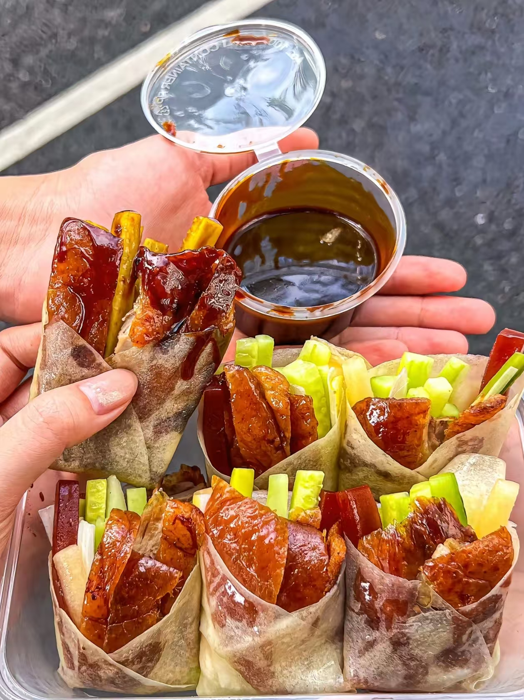
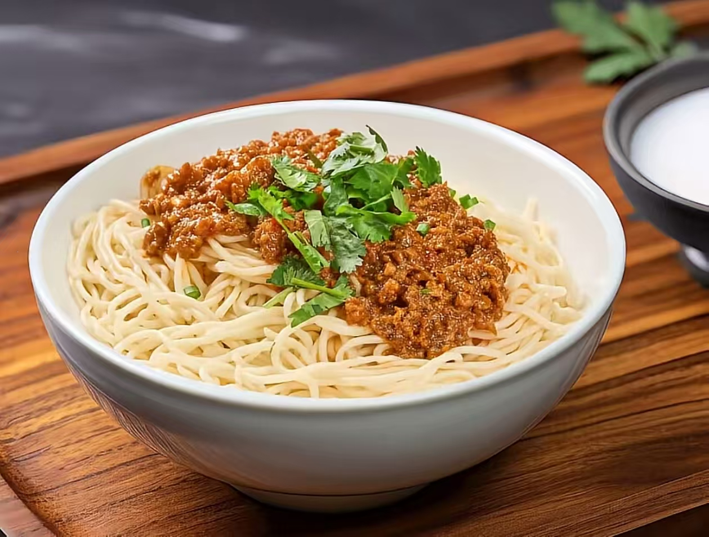
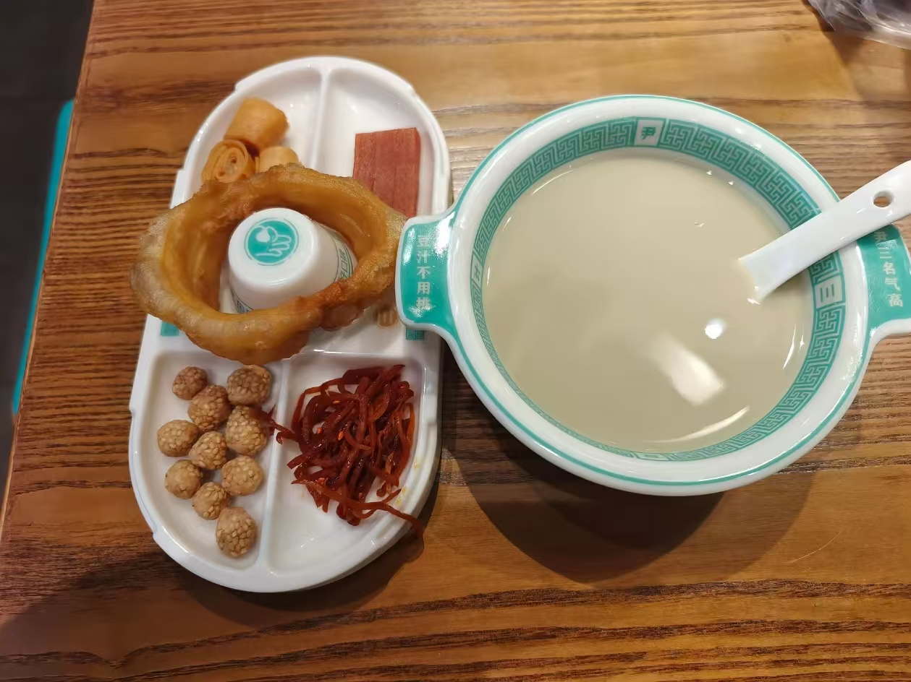
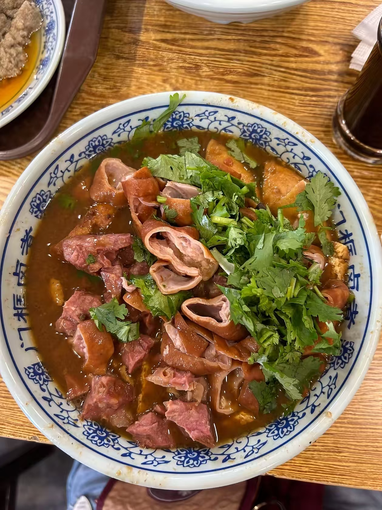
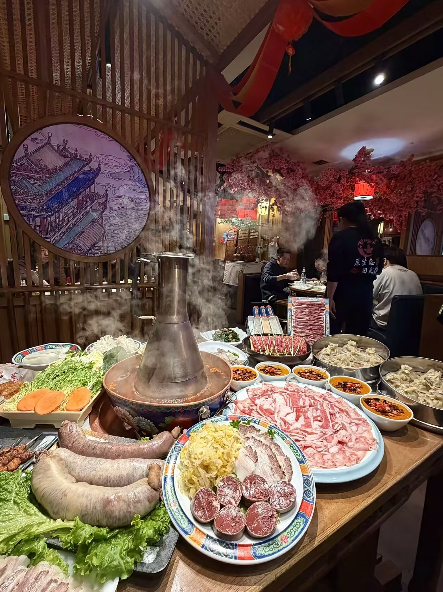
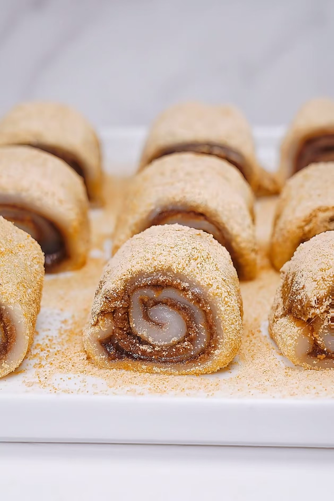

北京最著名的美食，被誉为"天下美味"，以果木炭火烤制，色泽红润，肉质肥而不腻，外脆里嫩。
查看详情 →
北京传统面食，由菜码、炸酱拌面条而成，酱香浓郁，筋道爽口，是老北京人的最爱。
查看详情 →
老北京最具特色的小吃，豆汁酸中带甜，焦圈酥脆可口，是老北京早餐的标配。
查看详情 →
北京传统小吃，将火烧、炖好的猪肠和猪肺放在一起煮，汤浓味厚，是地道的老北京味道。
查看详情 →
老北京传统火锅，铜锅炭火，清汤锅底，手切鲜羊肉，蘸麻酱小料，是冬天最地道的北京美食。
查看详情 →
北京传统小吃，黄米面卷红豆馅，外裹黄豆面，香甜软糯，豆香浓郁，老少皆宜。
查看详情 →